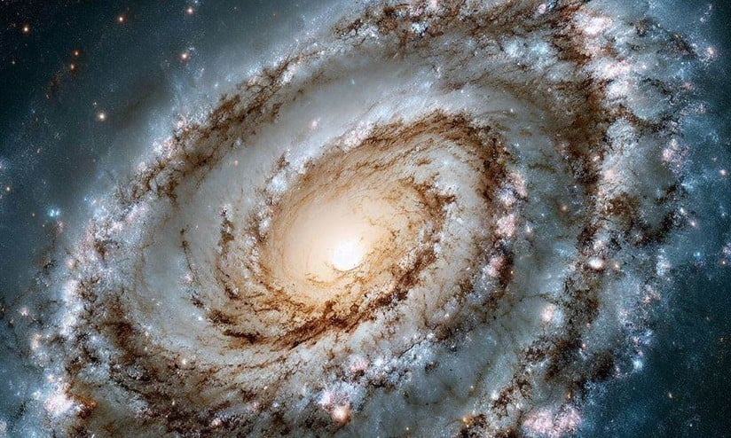

Bem vindo ao guia do moochileiro espacial, nesse rapido guia você encontrará tudo o que precisa para uma viagem segura pelas estrelas e galáxias vizinhas!
Galáxia de Andrômeda
Andrômeda é uma galáxia espiral gigante, a 2,5 milhões de anos-luz da Terra. É a galáxia grande mais próxima da Via Láctea.
A Galáxia de Andrômeda, também conhecida como M31, é uma galáxia espiral gigante e a maior vizinha da Via Láctea no Grupo Local. Veja mais detalhes:
Características Gerais
Tipo de Galáxia: Espiral.
Distância da Terra: Aproximadamente 2,5 milhões de anos-luz.
Diâmetro: Cerca de 220 mil anos-luz.
Quantidade de Estrelas: Mais de 1 trilhão.
Massa Total: Aproximadamente 1,5 vezes a massa da Via Láctea.
Estrutura
Assim como a Via Láctea, Andrômeda possui uma estrutura espiral composta por braços, um núcleo central brilhante e um halo galáctico.
Centro Galáctico: Contém um buraco negro supermassivo.
Halo Galáctico: Rico em estrelas velhas e aglomerados globulares.
Curiosidades
Andrômeda está se movendo em direção à Via Láctea e deve colidir com ela em cerca de 4,5 bilhões de anos.
É uma das poucas galáxias visíveis a olho nu em locais sem poluição luminosa.
Andrômeda possui várias galáxias satélites, como M32 e M110.
Nuvem de Magalhães
As Nuvens de Magalhães são galáxias anãs irregulares que orbitam a Via Láctea, a cerca de 200 mil anos-luz.
As Nuvens de Magalhães são galáxias satélites da Via Láctea, visíveis a olho nu no hemisfério sul. Elas são divididas em duas: a Grande Nuvem de Magalhães (GNM) e a Pequena Nuvem de Magalhães (PNM). Confira mais detalhes:
Características Gerais
Tipo de Galáxias: Irregulares.
Distância da Terra:
GNM: Cerca de 163 mil anos-luz.
PNM: Cerca de 200 mil anos-luz.
Diâmetro:
GNM: Cerca de 14 mil anos-luz.
PNM: Cerca de 7 mil anos-luz.
Estrutura
As Nuvens de Magalhães têm uma estrutura irregular, mas mostram sinais de braços espirais. A Grande Nuvem possui uma alta taxa de formação estelar, com áreas como a Nebulosa da Tarântula.
GNM: Contém estrelas jovens e regiões ativas de formação estelar.
PNM: É menos massiva e possui uma menor taxa de formação estelar.
Curiosidades
As Nuvens de Magalhães orbitam a Via Láctea e interagem gravitacionalmente com ela.
Elas deixam um rastro de gás chamado Corrente de Magalhães, visível em observações de rádio.
Exploradores como Fernão de Magalhães foram os primeiros a documentá-las no Hemisfério Sul, daí o nome.
Via Láctea
A Via Láctea é a galáxia espiral onde se encontra o Sistema Solar, com aproximadamente 100 mil anos-luz de diâmetro.

A Via Láctea é a galáxia em que vivemos e faz parte de um vasto conjunto de galáxias no universo.
Veja abaixo uma visão geral sobre essa incrível galáxia;
Características Gerais
Tipo de Galáxia: Espiral barrada.
Diâmetro: Aproximadamente 100 mil anos-luz.
Idade: Cerca de 13,6 bilhões de anos.
Quantidade de Estrelas: Entre 100 bilhões e 400 bilhões de estrelas.
Massa Total: Estimada em 1,5 trilhões de massas solares, incluindo a matéria escura.
Estrutura
Braços Espirais:
Braço de Perseus
Braço de Sagitário
Braço de Orion (onde está localizado o Sistema Solar)
Centro Galáctico:
Localizado na direção da constelação de Sagitário, contém um buraco negro supermassivo chamado Sagittarius A*, com cerca de 4 milhões de vezes a massa do Sol.
Halo Galáctico:
Uma região difusa ao redor da galáxia composta por estrelas, gás e matéria escura. Contém aglomerados globulares, que são coleções densas de estrelas.
Localização do Sistema Solar
O Sistema Solar está situado no Braço de Orion, a aproximadamente 27 mil anos-luz do centro galáctico. Ele completa uma órbita ao redor do centro da Via Láctea a cada 225 a 250 milhões de anos, um período conhecido como ano galáctico.
Curiosidades
A Via Láctea está se movendo em direção à galáxia de Andrômeda a uma velocidade de cerca de 110 km/s. Elas deverão colidir em aproximadamente 4,5 bilhões de anos, formando uma nova galáxia chamada "Lactômeda".
Grande parte da massa da Via Láctea (cerca de 85%) é composta de matéria escura, um tipo de matéria ainda não totalmente compreendida.
Os céus noturnos em regiões sem poluição luminosa mostram a faixa de luz da Via Láctea, formada pela luz de bilhões de estrelas.
A Via Láctea pertence ao Grupo Local, um pequeno aglomerado de galáxias que inclui Andrômeda e as Nuvens de Magalhães.